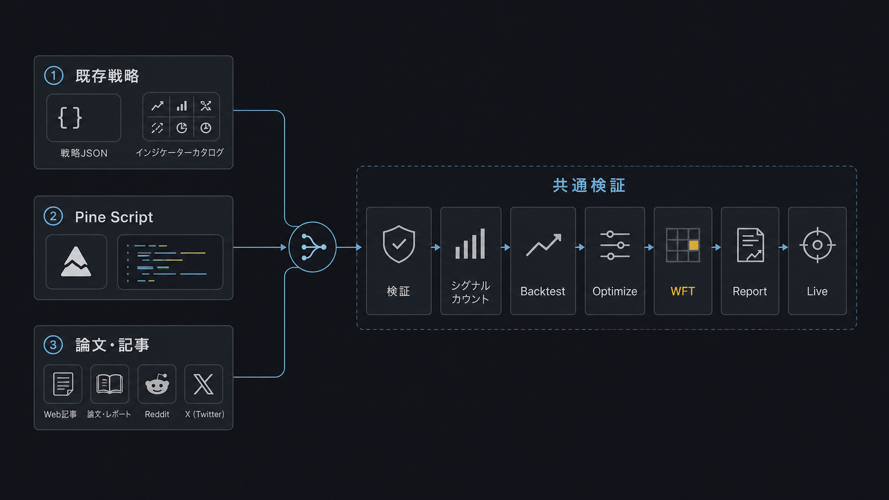
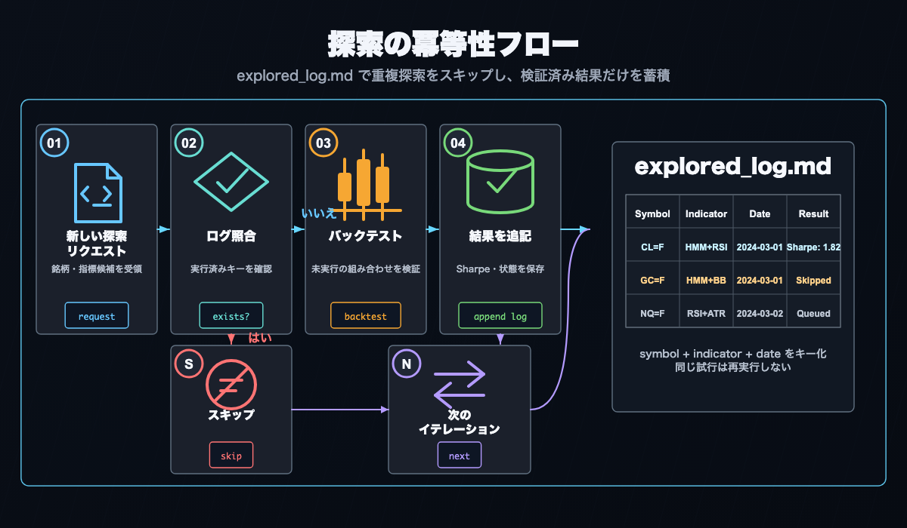

AI 駆動の戦略探索ワークフロー¶
Claude Code・Codex などの AI コーディングエージェントを「頭脳」として AlphaForge と組み合わせると、戦略の 着想 → 実装 → バックテスト → 最適化 → 検証 → 運用調整 を自律的に進められます。
前提
本ページのコマンド例とフローは alpha-trade モノレポ（alpha-forge + alpha-strategies の組み合わせ）における運用パターンです。バイナリ版 ユーザーは op run --env-file=... などの内部コマンドを forge に読み替えてください。
なぜ AI エージェント × AlphaForge か¶
AlphaForge は すべての設定・戦略・実行が JSON / YAML / CLI で完結する ように設計されています。これにより：
- AI エージェントが戦略 JSON を 生成・編集・検証 できる
- バックテスト・最適化の結果が 構造化データで返る ため、エージェントが解析・改善案を出せる
- スラッシュコマンドで 同じワークフロー を冪等に何度でも回せる
- レートリミットや人間の作業時間に依存せず、夜間に自律探索 を回せる
結果として、人間は「方向性の指示」「合否判定」に集中し、面倒な探索とパラメータ調整は AI に任せるという分業が可能になります。
手動フローとの使い分け¶
| 目的 | 推奨フロー |
|---|---|
| AlphaForge の全ステップを理解したい | エンドツーエンド戦略開発ワークフロー（手動 CLI） |
| 新しい指標・銘柄の組み合わせを素早く探索したい | 本ページ（AI 駆動の自律探索） |
| すでに有望な戦略があり、詰めたい | Step 3 の /grid-tune から始める |
| 実運用中の戦略の乖離を監視したい | Step 4 の /tune-live-strategies |
推奨コーディングエージェント¶
2026 年 4 月時点で alpha-forge と相性の良いエージェントの比較：
| エージェント | 強み | レート/料金（目安） | スラッシュコマンド対応 |
|---|---|---|---|
| Claude Code（推奨） | ファイル編集の精度、長時間タスク、Sonnet/Opus の使い分け | サブスクリプション or API 従量 | ✅ .claude/commands/*.md をネイティブサポート |
| Codex CLI | 高い基礎性能、OpenAI モデル | API 従量（GPT-5 等） | △ 設定経由でカスタムプロンプト |
| Cursor | IDE 統合、対話的に効率良い | サブスクリプション | △ Composer / Rules で代替 |
| Aider | OSS、複数モデルに対応、git 統合 | モデル料金のみ | △ /<command> 風 alias は手動設定 |
本ページでは Claude Code を前提に書きます。他エージェントを使う場合は .claude/commands/*.md の手順を読み込ませて同等のフローを実行できます。
全体フロー¶
準備: /update-market-data でデータを最新化
↓
起点を決める（3 つの探索シナリオから選択）
↓
Step 1: /explore-strategies [--goal <name>] [--runs N]
└─ 銘柄×指標を組み合わせてバックテスト→最適化→WFT を自動実行
初期フィルタ: Sharpe ≥ 1.0 かつ MaxDD ≤ 25%
↓
Step 2: /analyze-exploration
└─ 全探索ログを集計し、次に深掘りすべき候補を recommendations.yaml に出力
↓
Step 3: /grid-tune
└─ 有望な戦略を網羅的グリッドサーチで詰める + WFT 再検証
↓
Step 4: /tune-live-strategies
└─ 実運用後の乖離分析・再チューニング
準備: ヒストリカルデータ取得¶
探索を始める前に、対象銘柄のデータが最新化されているか確認します。
/update-market-data は forge data list で登録済みシンボルを確認し、各シンボルに対して forge data update を実行します。新しい銘柄を追加する場合は先に forge data fetch <SYMBOL> を手動実行してください。
3 つの探索シナリオ¶
AI エージェント × AlphaForge の使い方は、起点となる材料 で大きく 3 つに分類できます。

シナリオ 1: 既存戦略・指標の組み合わせ¶
起点: 手元の戦略 JSON、forge indicator list の指標カタログ
典型フロー:
- Claude Code に「
forge strategy show multi_asset_hmm_bb_rsi_v1_qqqの戦略をベースに、MACD を追加した派生版を作って」と指示 - AI が JSON を編集して
multi_asset_hmm_bb_rsi_macd_v1_qqq.jsonを生成 forge strategy validate→forge strategy save→forge backtest run- 結果を見て、Sharpe が改善していれば
forge optimize runで詰める
ポイント: /explore-strategies を使えば、AI に組み合わせ選定からレポートまで完全に任せられます。
シナリオ 2: TradingView Pine Script を起点とした応用¶
起点: TradingView の公開戦略・インジケータ（.pine ファイル）
典型フロー:
- TradingView で気になる戦略を見つけたら、Pine Script をローカルに保存（
tv_<name>.pine） - インポート:
forge pine import tv_<name>.pine --id imported_v1 - AI に「この戦略の
parametersとindicatorsを分かりやすく整理して、optimizer_configを追加して」と指示 - AI が JSON を整形・補強し、最適化対象を明示
forge backtest run→forge optimize runで AlphaForge 流に検証- 良ければ
forge pine generateで逆方向に書き戻し、TradingView でも動作確認
ポイント: Pine Script のロジックを JSON ベース に持ち込むことで、最適化・WFT・Monte Carlo など AlphaForge の解析機能をすべて使えるようになります。
シナリオ 3: 投資掲示板・論文を起点としたインターネット探索¶
起点: X (旧 Twitter)、Reddit /r/algotrading、SSRN の論文、QuantConnect・QuantStart の記事
典型フロー:
- Claude Code に URL や論文 PDF を渡して 「この戦略の核心ロジックを抽出して、
indicatorsとentry_conditionsのリストにして」と指示 - AI が記事を要約し、戦略 JSON のドラフトを生成
forge strategy validateで論理エラーをチェック → 修正forge backtest signal-countでシグナル件数を確認（条件が厳しすぎないか）forge backtest run→ 結果に応じてforge optimize run- 元記事の主張する結果と実バックテスト結果を比較（多くの場合、再現できない）
ポイント: 論文の戦略は「データ期間」「銘柄」「取引コスト」が異なると再現性がないことが多い。AI が「論文の主張」と「実バックテスト結果」のギャップを 冷静に評価 することで、フィルタリング機能を果たします。
Step 1: 探索フェーズ（/explore-strategies）¶
目的: goals/<goal_name>/goals.yaml で指定した目標指標（例: Sharpe ≥ 1.5）を満たす戦略を 未試行の指標×銘柄組み合わせ から探す。
実行ステップ（要約）¶
- 事前確認:
goals/<goal_name>/goals.yaml、goals/<goal_name>/explored_log.md、既存戦略 JSON を読み、未試行の組み合わせを把握 - 戦略生成: 未試行の指標×銘柄を 1 つ選び、戦略 JSON を生成して
data/strategies/<name>.jsonに保存 - 登録 → 検証:
forge strategy save→forge strategy validateで論理整合性を確認（失敗時はロールバック） - データ取得:
forge data fetch <SYMBOL> --period 5y（未取得の場合のみ） - パイプライン一括実行:
forge explore run <SYMBOL> --strategy <name> --goal <goal_name> --jsonシグナルチェック → バックテスト → 最適化 → WFT → coverage 更新 → DB 登録を 1 コマンドで完結 - 合否記録: 出力 JSON の
passed/skip_reasonを読み、goals/<goal_name>/explored_log.mdとgoals/<goal_name>/reports/YYYY-MM-DD.mdに追記。passed: falseかつcleanup_done: trueの場合、戦略 JSON / 結果 JSON は自動削除済み
> /explore-strategies # 1 ラン実行（デフォルトゴール）
> /explore-strategies --goal stocks # ゴールを指定
> /explore-strategies --runs 3 # 3 ラン連続実行
> /explore-strategies --goal crypto --runs 0 # レートリミットまたは全組み合わせ消化まで連続実行
合否基準¶
| フェーズ | 基準 |
|---|---|
| 初期フィルタ | Sharpe ≥ 1.0 かつ MaxDD ≤ 25% |
| WFT 最終合格 | WFT 全ウィンドウ平均 Sharpe ≥ goals/<goal_name>/goals.yaml の target_metrics.sharpe_ratio |
冪等性のポイント¶
goals/<goal_name>/explored_log.md がチェックポイントになるため、同じゴール内で同じ組み合わせを重複探索しません。中断・再開は安全です。

連続ランとレートリミット対策¶
--runs 0 を指定するとレートリミット到達または全組み合わせ消化まで繰り返し実行されます。
| エージェント | 主な制限 | 対策 |
|---|---|---|
| Claude Code | 5 時間ウィンドウのトークン制限（プラン依存） | 夜間 → 朝 → 昼で 3 ウィンドウに分けて回す |
| Codex | RPM / TPM（モデル別） | 並列度を下げて 1 イテレーション直列化 |
| Cursor | 月 / 日のリクエスト制限 | Composer Agent は重いので戦略生成に絞る |
複数ゴールによる並列実行
ゴールはそれぞれ独立しており、goals/<name>/ 配下に専用の explored_log.md を持ちます。異なるゴールを別々の Claude Code セッションで同時実行しても競合しません。バックテスト結果は exploration.db を通じて全ゴールで共有されるため、同一の銘柄×指標の組み合わせが重複してバックテストされることもありません。
Step 2: 分析・絞り込み（/analyze-exploration）¶
目的: 過去のすべての探索ログを集計・分析し、次に試すべき組み合わせを 科学的に推薦 する。
処理内容¶
goals/*/explored_log.md+goals/*/reports/*.mdを全読み込み- 銘柄別パフォーマンス表（試行数、最高/平均 Sharpe、最低 MaxDD、合格数）を生成
- 指標組み合わせ別パフォーマンス表（試行回数、平均/最高 Sharpe、合格率）を生成
- 未試行組み合わせのスコアリング（0–10 点）：
- 類似指標の既存平均 Sharpe（+0–4）
- 銘柄の試行回数の少なさ（+0–2）
- 指標の新規性（+0–2）
- 直前ランの推奨候補にあったか（+2）
- 分析レポートを
data/explorer/analysis/YYYY-MM-DD_HH-MM.mdに保存 recommendations.yamlに上位 5 件を出力（次の/explore-strategiesが参照）
出力例（recommendations.yaml）¶
candidates:
- rank: 1
asset: QQQ
indicators: [HMM, BBANDS, RSI, MACD]
score: 8.5
rationale: "HMM × BBANDS の平均 Sharpe が高く、QQQ は試行少。MACD 追加で新規性 +"
basis_sharpe: 1.32
basis_maxdd: 18.4
variant_of: multi_asset_hmm_bb_rsi_v1_qqq
Step 3: 精密チューニング（/grid-tune）¶
目的: Step 1 で合格した戦略について、optimizer_config.param_ranges を Cartesian Grid に展開して網羅探索、合格すれば自動で <name>_optimized として保存。
実行ステップ¶
- 戦略確認:
forge strategy show <strategy_name>でparam_rangesの存在と Grid 総数を確認 - シグナル件数チェック（必須）:
forge backtest signal-count - ベースライン取得:
forge backtest runで元戦略の Sharpe を控える - Grid 網羅探索:
forge optimize grid <symbol> --strategy <name> --metric sharpe_ratio --top-k 20 --chunk-size 100 --max-memory-mb 4096 --min-trades 30 --save --save-format csv --yes - Top-20 レビュー（過学習の疑い、上位 trial の近傍集中を確認）
- ベスト適用:
forge optimize grid ... --top-k 1 --apply --yes - WFT 検証:
forge optimize walk-forward <symbol> --strategy <name>_optimized --windows 5 - 合否判定: WFT 全ウィンドウ平均 Sharpe が 元戦略の Sharpe を超えていれば合格
- 合格 →
forge journal verdict <name>_optimized <run_id> pass - 不合格 →
forge strategy delete <name>_optimized --force+ 元戦略の Journal にnote追加
- 合格 →
メモリ・OOM の目安¶
- 1 シンボル × 5 年分 × 1,000 通り Grid →
--chunk-size 100 --max-memory-mb 4096で OOM なく完走 - それ以上 →
--chunk-size 50 --max-memory-mb 2048などに下げる param_rangesのstepを粗くして総数を絞ることも有効
Step 4: 実運用監視（/tune-live-strategies）¶
目的: 実運用中の戦略について、ライブ成績がバックテストから乖離しているものを検出し、自動的に再最適化 する。
実行ステップ¶
- 乖離検出:
forge live list→ 各戦略 ID でforge live compare <strategy_id>を実行し、goals/<goal_name>/goals.yamlのlive_tuning.sharpe_drift_thresholdを超えたものを抽出 - 再最適化: 乖離が大きい戦略ごとに：
forge optimize run <SYMBOL> --strategy <name> --metric sharpe_ratio --saveforge optimize walk-forward <SYMBOL> --strategy <name> --windows 5
- 採用判定: WFT の全ウィンドウ平均 Sharpe が 改善している場合のみ
<name>_optimized.jsonを更新。改悪なら現状維持 - レポートを
data/explorer/reports/tuning-YYYY-MM-DD.mdに追記
週次の定期実行か、乖離が気になったときの手動実行で十分です。乖離が連続 N 週続く場合は戦略の根本見直し（指標差し替え、別シナリオへの転換）を検討してください。
キーファイルの役割¶
alpha-strategies/data/explorer/
├── goals/
│ ├── default/ # デフォルトゴール（--goal 省略時に使用）
│ │ ├── goals.yaml # 目標指標と探索範囲を定義
│ │ ├── explored_log.md # このゴールの冪等チェックポイント
│ │ └── reports/
│ │ ├── YYYY-MM-DD.md # /explore-strategies の日次レポート
│ │ └── tuning-YYYY-MM-DD.md # /tune-live-strategies のレポート
│ ├── stocks/ # 米国株・ETF ゴール
│ │ ├── goals.yaml
│ │ ├── explored_log.md
│ │ └── reports/
│ ├── commodities/ # コモディティゴール
│ │ └── ...
│ └── crypto/ # 暗号資産ゴール
│ └── ...
├── exploration.db # 全ゴール共有のバックテスト結果キャッシュ
├── recommendations.yaml # /analyze-exploration が出力する次回推奨候補
└── analysis/
└── YYYY-MM-DD_HH-MM.md # /analyze-exploration の出力
goals/<goal_name>/goals.yaml: 目標 Sharpe・MaxDD・探索対象の銘柄・指標セット・strategies_per_run などをゴールごとに定義します。/explore-strategies --goal <name> でゴールを指定し、省略時は goals/default/ を使用します。
goals/<goal_name>/explored_log.md: ゴール内で試行済みの組み合わせを記録するチェックポイント。このファイルが存在する限り、同じゴール内で同じ組み合わせが重複探索されることはありません。
exploration.db: 全ゴールで共有する SQLite キャッシュ。同じ銘柄×指標の組み合わせがいずれかのゴールで既にバックテスト済みの場合、結果を再利用します（重複実行なし）。
recommendations.yaml: /analyze-exploration が生成する次回推奨候補。/explore-strategies はこのファイルを読み、スコアの高い組み合わせを優先的に選択します。
なぜ最適化後に WFT を実施するか¶
各ステップで Walk-Forward Test（WFT） を必須としているのは、過学習（オーバーフィッティング）を防ぐためです。
In-Sample データ（最適化に使った期間）だけで評価すると、パラメータがそのデータに過適合している可能性があります。WFT は：
- 全期間を複数ウィンドウに分割
- 各ウィンドウで「最適化 → Out-of-Sample 検証」を実施
- OOS 期間での平均 Sharpe を最終評価に使う
これにより「過去データには強いが将来には機能しない」戦略を弾く設計になっています。
ワンサイクル実例（探索 → 最適化 → 検証 → 運用）¶
「QQQ で HMM × BB × RSI に MACD を加えるアイデア」を検証 → 採用するまでの実例です。
# 1. アイデアを記録（任意、後でリンク可能）
forge idea add "QQQ HMM×BB×RSI に MACD を追加" \
--type improvement --tag hmm --tag qqq
# 2. /explore-strategies で 1 サイクル試す（Claude Code 内）
> /explore-strategies
# → 戦略 JSON 自動生成、validate、signal-count、backtest を実施
# → Sharpe=0.95 で pre-filter 落ち（Sharpe ≥ 1.0 が条件）
# 3. 派生版で再挑戦（パラメータを変えてみる、AI に依頼）
> 上記戦略の HMM の n_components を 2 に減らして再試行して
# → AI が修正版 JSON を生成・登録 → backtest（Sharpe=1.18 で pre-filter 通過）
# → 自動で optimize run + walk-forward 実行
# → WFT 平均 Sharpe=1.32 で合格
# 4. /grid-tune で網羅最適化
> /grid-tune multi_asset_hmm_bb_rsi_macd_v1_qqq QQQ
# → Grid Top-1 → apply → WFT 検証で 1.45 達成
# → forge journal verdict pass で記録
# 5. 過学習ロバスト性チェック
forge optimize sensitivity \
/path/to/data/results/optimize_multi_asset_hmm_bb_rsi_macd_v1_qqq_optimized_20260415_103021.json
# → overall_robustness_score=0.82（合格）
# 6. ジャーナルに最終承認を記録
forge journal verdict multi_asset_hmm_bb_rsi_macd_v1_qqq_optimized <run_id> pass
forge journal note multi_asset_hmm_bb_rsi_macd_v1_qqq_optimized "OOS pass + sensitivity 0.82。本番投入候補。"
# 7. TradingView 用 Pine Script を生成
forge pine generate --strategy multi_asset_hmm_bb_rsi_macd_v1_qqq_optimized --with-training-data
# 8. ライブ運用開始（VPS に発注エンジンを配置、本ドキュメント範囲外）
# 9. 1 週間後、ライブ成績を比較
forge live import-events multi_asset_hmm_bb_rsi_macd_v1_qqq_optimized
forge live compare multi_asset_hmm_bb_rsi_macd_v1_qqq_optimized
# 10. 乖離が大きければ /tune-live-strategies で自動再チューニング
> /tune-live-strategies
このフロー全体のうち、人間が判断するのは 3 箇所だけ です：
- アイデアの方向性（HMM × BB × RSI に MACD を加える）
- Grid-tune の Top-20 レビュー（過学習の疑いを確認）
- ライブ運用開始の意思決定
それ以外は全部 AI が自動で進めます。
関連ドキュメント¶
- エンドツーエンド戦略開発ワークフロー — 手動 CLI による全ステップの詳細
- はじめに — 初回バックテストまでのチュートリアル
- CLI リファレンス —
forgeコマンドの全パラメータ - 戦略テンプレート — HMM × BB × RSI 等の同梱戦略